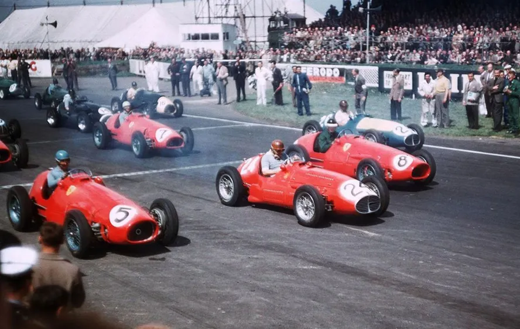
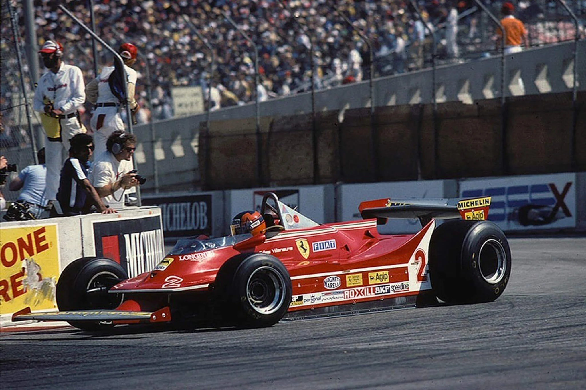
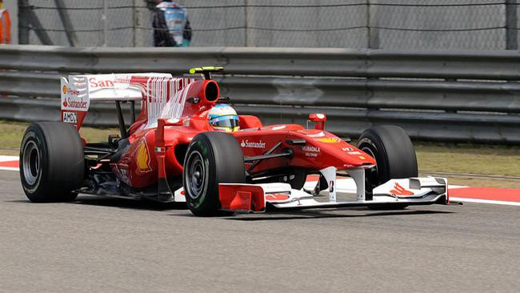

O Início na Fórmula 1

A Ferrari é a equipe mais tradicional da Formula 1. Estreou na categoria em 1950 e, desde então, é a única equipe presente em todas as temporadas da F1. Fundada por Enzo Ferrari, a escuderia rapidamente se destacou pela competitividade e paixão pelas corridas.
Primeiros Títulos

O primeiro grande sucesso veio em 1952 e 1953 com Alberto Ascari, que conquistou dois títulos mundiais de pilotos. Nas décadas seguintes, a Ferrari continuou forte, vencendo campeonatos com pilotos lendários e consolidando sua imagem como potência da categoria.
Era de Ouro com Schumacher
O período mais dominante da equipe aconteceu entre 2000 e 2004, com Michael Schumacher. Ao lado de uma equipe extremamente organizada, ele conquistou cinco títulos consecutivos pela Ferrari, marcando uma das fases mais vitoriosas da história da F1.
Desafios e Reconstrução

Após o auge dos anos 2000, a Ferrari enfrentou altos e baixos. Mesmo com vitórias importantes e disputas intensas por campeonatos, a equipe passou por reformulações para tentar voltar ao topo.
A Ferrari Hoje
Atualmente, a Ferrari segue como uma das equipes mais competitivas e populares da Fórmula 1. Mesmo em meio a desafios, mantém a tradição, a enorme base de fãs e o objetivo constante de conquistar novos títulos mundiais.